🎯 Pourquoi ce chapitre ?
D'après le programme officiel tunisien (Thème 3, Objectif 1 — p.18-19), ce chapitre vise à :
📚 Préacquis du Thème 3
- Tous les êtres vivants sont constitués de cellules. Chaque cellule assure ses fonctions vitales.
- Une cellule est constituée d'une membrane plasmique, d'un cytoplasme et d'un noyau.
- Les organismes unicellulaires (paramécie, levure) ne renferment qu'une seule cellule.
- Chez les organismes pluricellulaires, les cellules sont regroupées en tissus et organes spécialisés.
- La photosynthèse (chloroplastes) et la respiration cellulaire (mitochondries) sont deux fonctions cellulaires fondamentales.
❓ 2 Questions directrices
- Quels sont les constituants des cellules animales et végétales ?
- Quels sont les caractères communs à toutes les cellules eucaryotes ?
🧠 Comprendre avant de mémoriser
Ce chapitre est fondamental pour tout le Thème 3 (génétique). La logique est : toutes les cellules eucaryotes partagent une organisation commune (membrane, cytoplasme, noyau, mitochondries...) mais les cellules végétales ont des structures supplémentaires (paroi, plastes, vacuoles). Le microscope électronique révèle les organites invisibles au microscope optique. Maîtriser les organites et leurs fonctions est indispensable pour comprendre la mitose (Ch.3) et la génétique (Ch.4).
Clique sur chaque notion · Pièges CAPES et connexions révélés
🐾 La Cellule animale — constituants au microscope optique
| Constituant | Description | Fonction |
|---|---|---|
| Membrane plasmique | Enveloppe fine et souple | Protection · Échanges avec le milieu extérieur |
| Cytoplasme | Contenu cellulaire (hyaloplasme + organites) | Siège des réactions métaboliques |
| Noyau | Organite volumineux (5–6 µm) | Centre de contrôle · Contient l'ADN |
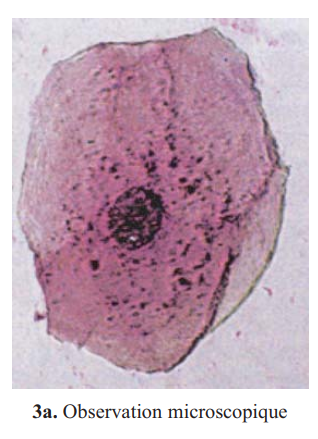
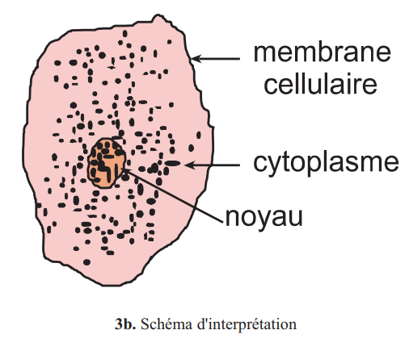
🌿 La Cellule végétale — spécificités
| Structure spécifique | Description | Fonction |
|---|---|---|
| Paroi squelettique | Enveloppe rigide en cellulose | Protection · Maintien de la forme |
| Plastes | Chloroplastes, Amyloplastes, Chromoplastes | Photosynthèse · Réserve |
| Vacuoles | Grandes vésicules (80% volume) | Stockage eau · Turgescence |
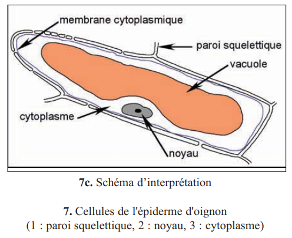
1. La paroi squelettique de la cellule végétale est composée de .
2. Les organites qui réalisent la photosynthèse sont les .
3. Les vacuoles des cellules végétales occupent jusqu'à .
⚡ Les organites révélés par le microscope électronique
| Organite | Structure | Fonction | Présent dans |
|---|---|---|---|
| Noyau | Membrane nucléaire + chromatine + nucléole | Contrôle cellulaire · ADN | Animale + Végétale |
| Mitochondrie | Double membrane · Crêtes internes | Respiration → énergie (ATP) | Animale + Végétale |
| RE + Ribosomes | Réseau membranes + petits grains | Synthèse et transport protéines | Animale + Végétale |
| Appareil de Golgi | Saccules aplatis + vésicules | Stockage · Sécrétion (exocytose) | Animale + Végétale |
| Centriole | Cylindres | Division cellulaire (mitose) | Animale seulement |
| Chloroplaste | Double membrane + thylakoïdes | Photosynthèse | Végétale seulement |
⚠️ 3 Pièges classiques CAPES
🔗 Connexions avec le manuel — Thème 3
Les caractères héréditaires sont portés par l'ADN contenu dans le noyau.
Le centriole intervient dans la formation du fuseau de division.
L'ADN, localisé dans la chromatine du noyau, est le support de l'information génétique.
Photosynthèse + Respiration = base cellulaire du cycle du carbone (T2Ch4).
💭 Questions de réflexion
1. Structure de la cellule animale
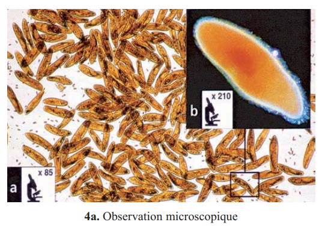
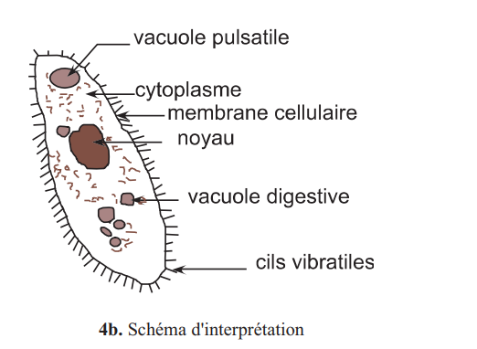
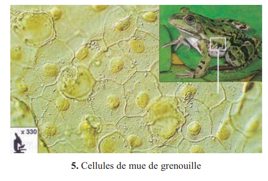
Au microscope optique (MO), une cellule animale montre :
| Élément observé | Description |
|---|---|
| Membrane plasmique | Contour de la cellule — fine et souple |
| Cytoplasme | Substance semi-fluide remplissant la cellule |
| Noyau | Corps sphérique ou ovoïde bien visible |
Colorants utilisés
| Colorant | Ce qu'il colore | Couleur |
|---|---|---|
| Bleu de méthylène | Noyau (ADN + ARN) | Bleu |
| Eau iodée | Noyau + amidon | Brun-jaune |
| Vert de méthyle acétique | ADN spécifiquement | Vert |
| Rouge neutre | Vacuoles cellulaires | Rouge |
1. Pour observer les cellules de l'épithélium buccal, on effectue un prélèvement avec .
2. Le colorant qui colore spécifiquement l'ADN en vert est le .
3. Les chloroplastes de la feuille d'Elodée sont observables au MO .
2. Structure de la cellule végétale — points communs et spécificités
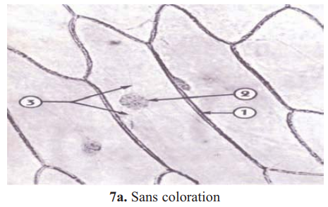
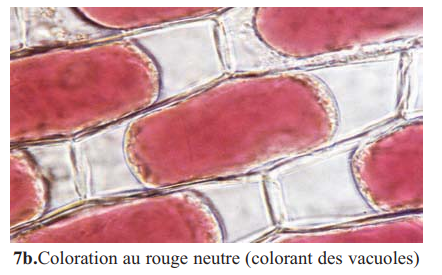
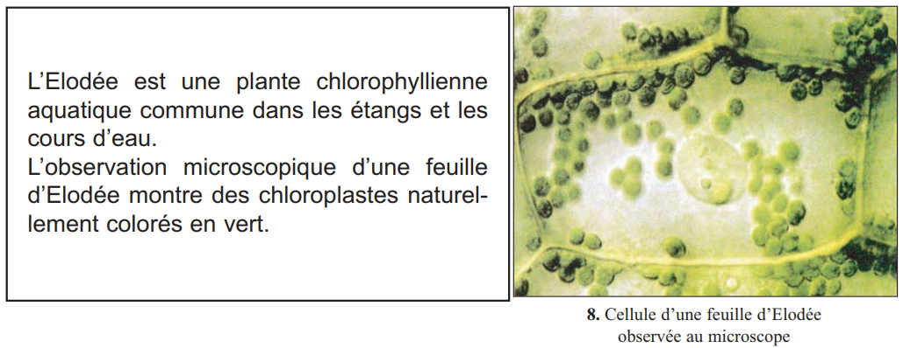
| Constituant | Cellule animale | Cellule végétale |
|---|---|---|
| Membrane plasmique | ✅ | ✅ |
| Cytoplasme | ✅ | ✅ |
| Noyau | ✅ | ✅ |
| Paroi squelettique | ❌ | ✅ (cellulose) |
| Plastes (chloroplastes...) | ❌ | ✅ |
| Vacuoles (grosses) | ❌ | ✅ (80% volume) |
📌 Retenons — Structure au MO
1. La cellule végétale se distingue par la présence d'une .
2. Dans l'épiderme d'oignon, le rouge neutre colore les .
3. La paroi squelettique est présente .
Les organites révélés par le microscope électronique (ME)
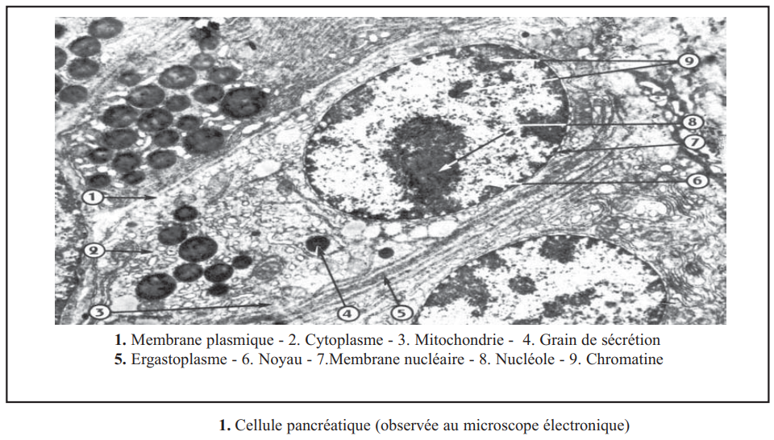
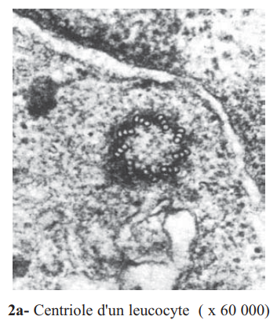
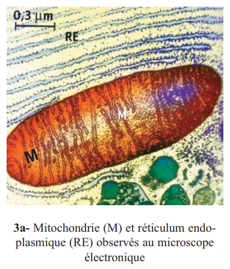
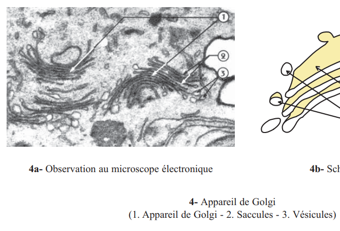
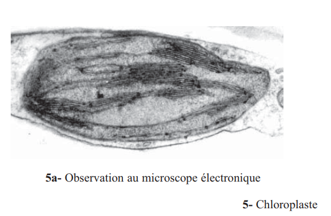
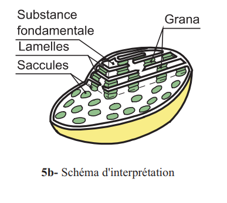
Le ME permet d'observer des structures invisibles au MO appelées organites baignant dans le hyaloplasme.
| Organite | Structure caractéristique | Fonction |
|---|---|---|
| Noyau | Membrane nucléaire (pores) · Chromatine · Nucléole | Contrôle cellulaire · ADN |
| Mitochondrie | Double membrane · Crêtes internes | Respiration → énergie (ATP) |
| RE + Ribosomes | Réseau de membranes · Petits grains | Synthèse et transport protéines |
| Appareil de Golgi | Saccules aplatis empilés · Vésicules | Stockage · Sécrétion (exocytose) |
| Centriole | Cylindres (cellule animale) | Formation fuseau (mitose) |
| Chloroplaste | Double membrane · Thylakoïdes | Photosynthèse (cellule végétale) |
1. L'organite siège de la respiration cellulaire est .
2. Le réticulum endoplasmique (RE) assure la .
3. L'appareil de Golgi permet .
4. Le centriole est présent .
📌 Retenons — Bilan des organites
1La cellule animale est limitée par une souple. Son cytoplasme renferme un volumineux (5–6 µm) limité par une .
2La cellule végétale possède la même organisation plus : une ; des ; de grosses .
3Au ME, le noyau est limité par une . Il contient la et un ou des . Ces organismes sont les .
4Les sont le siège de la . Le associé aux ribosomes assure la synthèse de protéines. L' permet le stockage et la sécrétion.
🃏 Flashcards
✏️ QCM — Format CAPES (1 à 3 bonnes réponses)
Questions du manuel (p.183) et complémentaires
📝 Exercices interactifs
Q1. Toute cellule animale montre la présence de :
Q2. La cellule végétale est caractérisée par la présence :
Q3. La respiration cellulaire se déroule dans :
🔬 Ex.1 — Présence des organites (exercice V, p.183)
| Organite | Cellule animale | Cellule végétale |
|---|---|---|
| Membrane plasmique | ||
| Paroi squelettique | ||
| Mitochondries | ||
| Chloroplastes | ||
| Centriole | ||
| Réticulum endoplasmique | ||
| Appareil de Golgi |
⚡ Ex.2 — Associer chaque organite à sa fonction
| Organite | Fonction principale |
|---|---|
| Mitochondrie | |
| Chloroplaste | |
| RE + Ribosomes | |
| Appareil de Golgi | |
| Noyau | |
| Centriole |
🔢 Ex.3 — Du plus grand au plus petit
Ordre du plus grand (1) au plus petit (6) :